Building an AI-Powered Knowledge Base for NYC Community Boards
Tal Roded, NYCuriosity Author & Manhattan CB3 Member
Sarah Sachs, Block Party Founder
Major Contributions from McKay Warren, Sourabh Chakraborty, Brandon Pachuca, Amy Chen
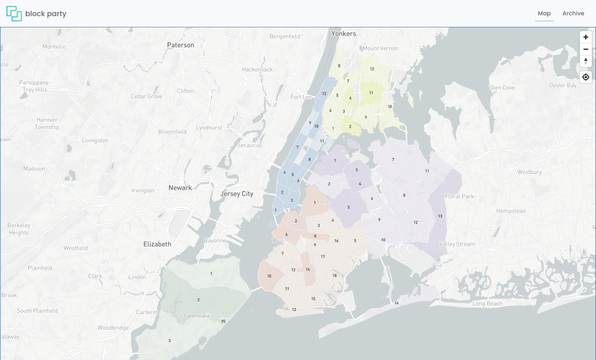
Have you ever attended a Community Board Meeting?
Most folks we ask, typically respond with a confused look...
Have you ever attended a community board meeting? I see some nods in the virtual crowd, it looks like some of us have attended, but maybe not as much as we would like. while some of us have attended these meetings, why are they important?
Why are Community Boards important?
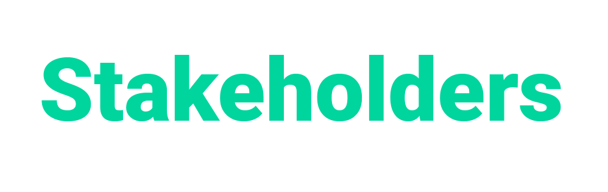
local
Community boards produce more structured civic data than almost any other level of government.
Community boards discuss policies, initiatives, priorities which impact our day to day lives. They act as the community’s voice when brokering conversations with state and local governments, non profit agencies and other organizations. In a nutshell, they are the most local level of democracy, and making them more accessible strengthens the representation of the community.
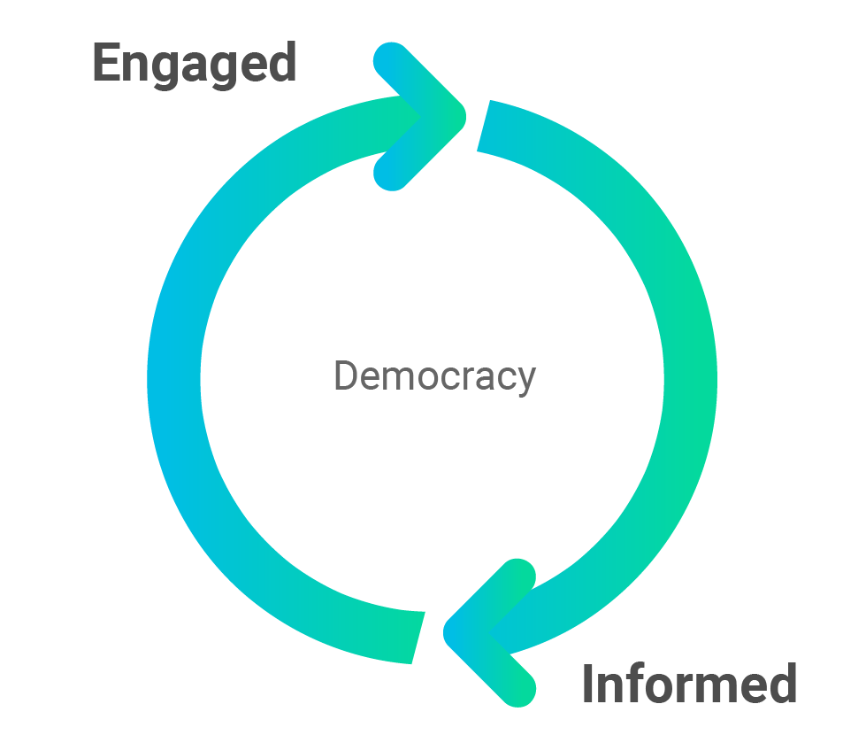
How might technology be used to help make local democracy more accessible?
It can be said that democracy is not a spectator sport, and to become engaged in democracy we must be informed. Encourage people to actually attend community board meetings, being informed can help be engaged - to know what is being discussed in the meetings, to speak up as a public member, or even to vote as a public member Technology can help with this process of being informed

Our Story - Cheers to the NYC Civic Tech Community!
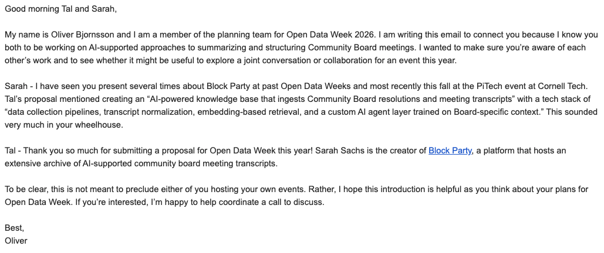
Oliver - on NYC OTI
Agenda
Part 1: What are community boards and why do they matter?
Part 2: What is the opportunity for civic technology?
Part 3: Recent Updates + Scaling the Tool
Demo time
Q&A
PART ONE
What Are NYC Community Boards
and Why Do They Matter?
The Local Layer of NYC Government Most People Don’t Know Exists
Community boards are the ground floor of New York City politics—and most New Yorkers have never heard of them.
· 59 community boards across NYC’s 5 boroughs
· Established by the NYC Charter
· Represent a single community district — neighborhood scale
· Members are uncompensated volunteers appointed by their Borough President to serve two-year terms
· Charter Mandate: “consider the needs of the community district and advise elected officials”
The key fact:
Community boards have NO formal decision-making power.
Their role is advisory.
So why do they matter? →
Soft Power — Why “Advisory” Doesn’t Mean Toothless
▶
Resolutions on the record
Every agency and elected official sees when CB formally opposes their project. Ignoring a unanimous board vote can have political costs.
▶
District Needs Statement (DNS)
Annual priorities document filed by each CB. City agencies must respond to DNS requests in budget planning — direct budget influence.
▶
Required ULURP referrals, SLA & sidewalk cafe applications
For major land use decisions (rezonings, new developments), the city is legally required to refer applications to the CB. Recommendations become public record.
▶
Political pipeline
Many City Council members began as CB members. Relationships here open doors in elected offices and city agencies.
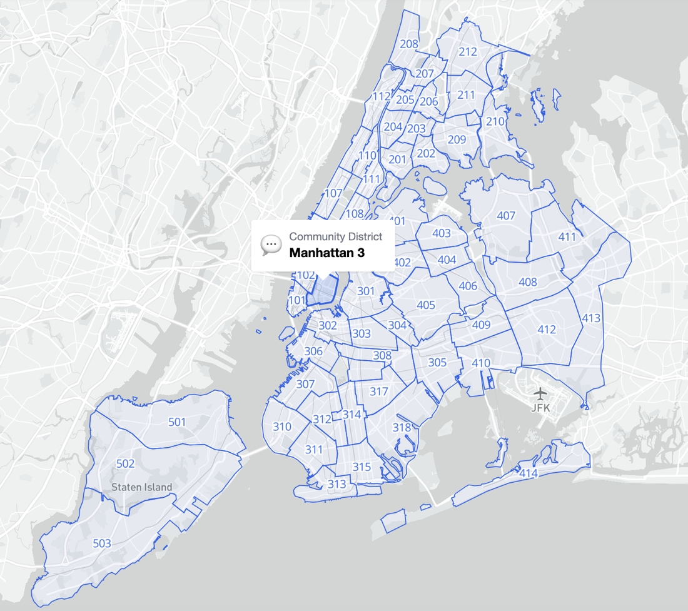
BetaNYC Boundaries Map
How Community Boards Are Structured
Who’s on the board:
· Up to 50 volunteer members
· 2-year terms (max 4 consecutive)
· No salary, no formal qualifications
· Only requirement: Must live, work, or have significant interest in the district
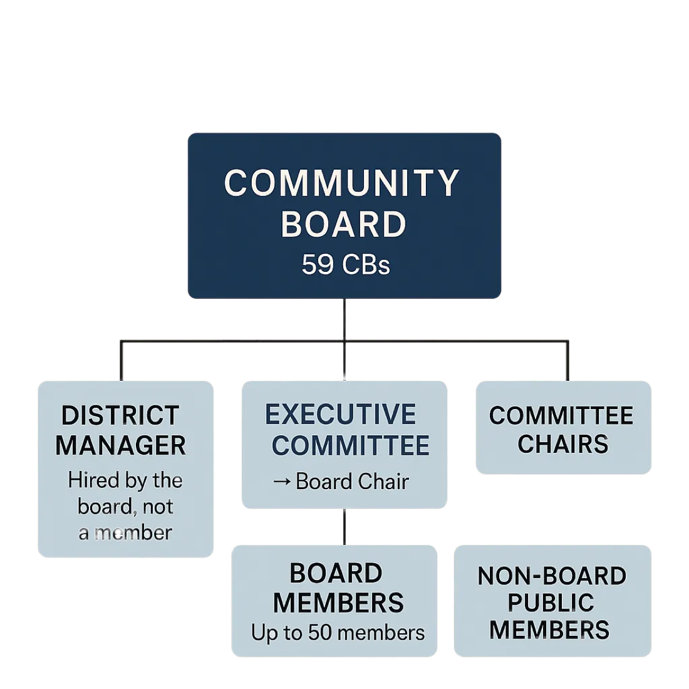
Leadership & staff:
· Chair, Vice-Chairs, Secretary,
Treasurer (elected by members)
· One paid District Manager, optional additional non-member staff
Subject-matter Committees:
· Transportation · Parks · SLA
· Land Use · Landmarks · Housing
· Health · Youth & Education
What Is a Resolution?
Resolutions are official, written, public positions on a local issue.
Standard resolution format:
TITLE: One-sentence summary
WHEREAS, [context and reasoning]...
WHEREAS, [additional context]...
THEREFORE, BE IT RESOLVED,
that Community Board 3 [action]...
MCB3 votes on:
· Bar & restaurant liquor licenses
· Traffic safety improvements
· Real estate developments
· City agency requests
(repaving, tree planting…)
· City-wide policy positions
tee up the tool here - but they're not accessible...
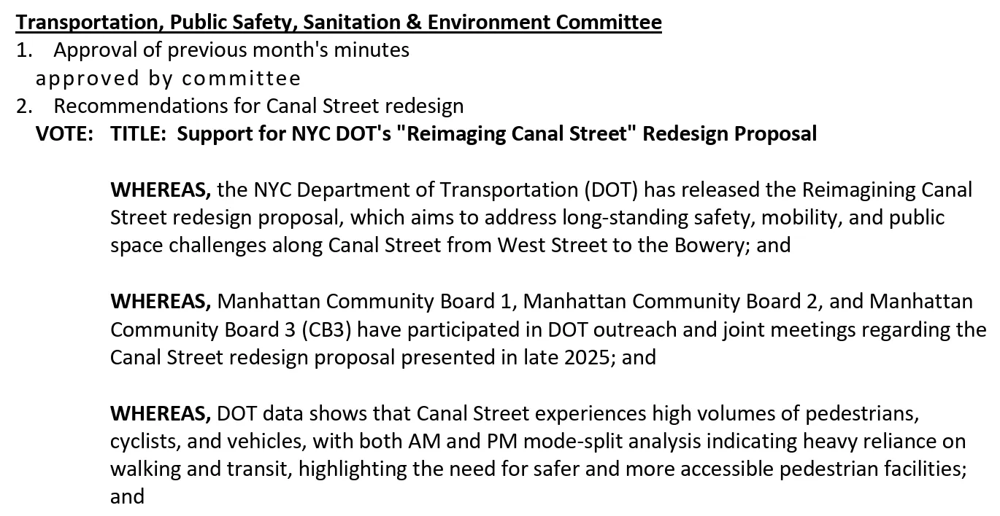
Partial text of a Manhattan CB3 resolution from the Transportation Committee. Note the succinct title and series of WHEREAS clauses (which continue past the end of this image). [source]
Two Kinds of Community Board Meetings
Full Board Meetings
Monthly · Open to the public
· Public comment period (~2 min per person)
· Elected officials give reports
· Committees report resolutions
· Full Board votes on resolutions
Committee Meetings
(Usually) Monthly · (Usually) Open to the public
· Agencies present project details
· Resolutions drafted and debated by committees
· Where advocacy is most effective
· Where the real work happens
Advocate insight: By the time a resolution reaches the full board, the debate is mostly over. Show up to committee meetings.
The Information Problem
Community boards are officially transparent — but practically opaque.
✅ What exists
· All meetings open to the public
· All resolutions and votes recorded publicly
· Minutes posted as PDFs or on Airtable on individual community board websites
· PDFs (for MCB3) go back to 2002
❌ What’s missing
· No structured database
· No search across resolutions
· No way to track a topic or location
across 20 years of minutes
· No way to identify contested issues
· 268 siloed PDFs (for MCB3)
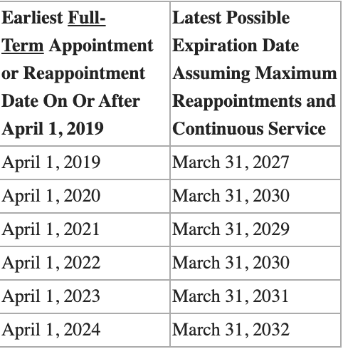
Table from the Office of the Manhattan Borough President
Community Board member term limits begin in 2027 - is local government prepared for the significant loss of institutional knowledge?
Community Board Term Limits
This is a problem Block Party can help solve.
PART TWO
What is the Opportunity for Civic Technology?
Now transitioning into the civic tech part of our presentation, where we will share how we leveraged technology to help make this information more accessible.
Community Board Meetings can be inaccessible.
As Tal has eluded to, community board meetings can be inaccessible, whether it is attending a meeting or staying informed on local policy decisions. This was always the idea behind block party, when community board meetings became virtually accessible on YouTube during the Covid pandemic, I thought it would be cool to use technology to create a summary and full transcript from the meeting conversation. Block party has continued to evolve over the years and continues to serve the community because most folks don’t have the time to attend the many hours of meeting conversations or know what was discussed.
Community Board 3 meetings on average last 02:07:38
For community board 3 the typical meeting lasts about 2 hours and occur a few times per week. Across community boards in the block party meeting transcript archive,
The longest community board meeting in our archive lasted 07:22:17
The longest community board meeting from the on record was 7 hours, 22 minutes, and 17 seconds. It was from Manhattan CB2 February 11, 2025 - Outdoor Dining Working Group Meeting This is evidence that A LOT is discussed at these meetings, but unless you’re really plugged in - it’s hard to stay informed or engage. This is really the ethos behind Block party
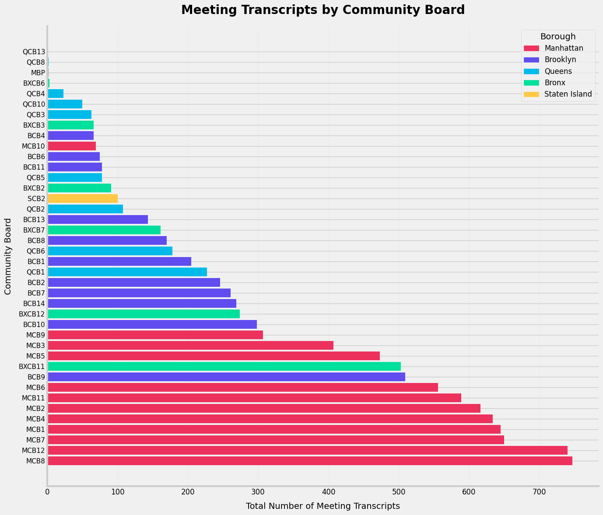
Where over the past 6 years we have collected hundreds of meeting transcripts across districts representing each borough.
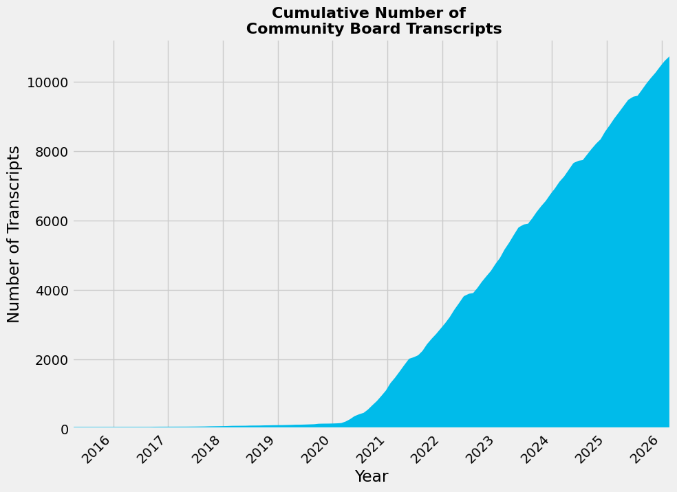
Block Party’s Archive has 11,986 Community Board Meeting Transcripts dating from 2015 to yesterday
Since the start of the pandemic CB meetings have been publishing their meetings to Youtube, digitizing the information for archive, and public access. And the volume of meetings published continues to grow.
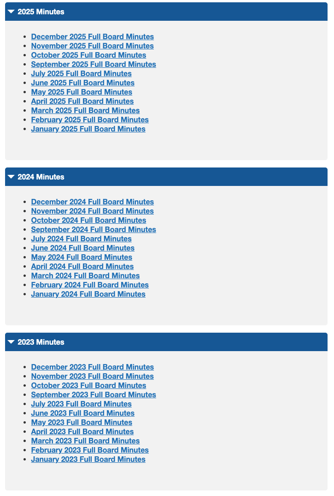
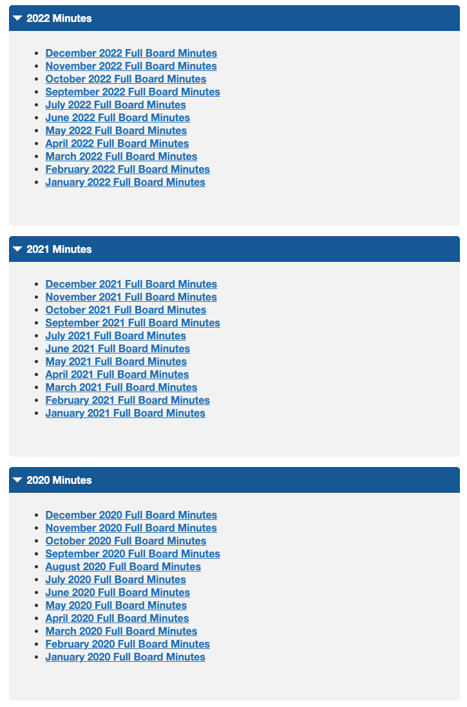

The Information Problem
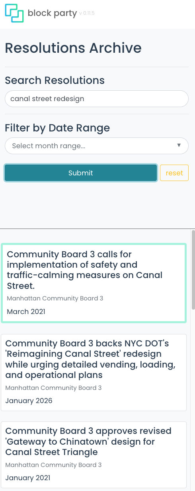
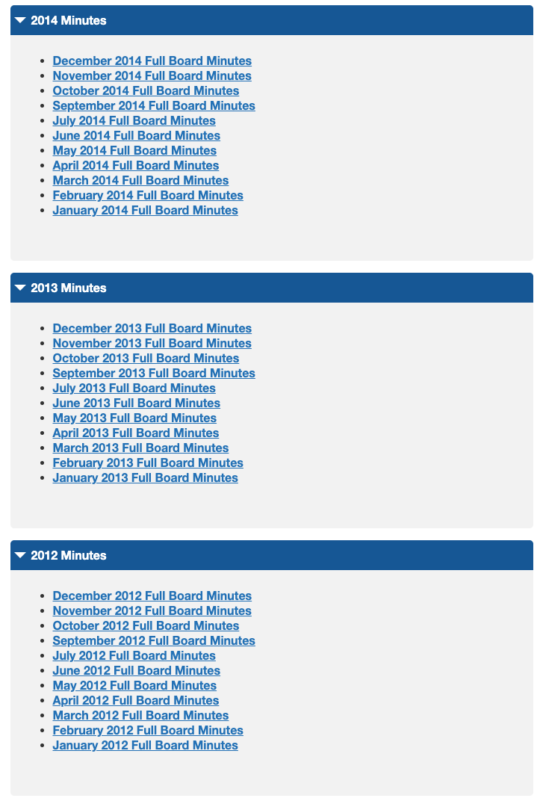
Now here is what we did for resolutions. The rest of this presentation will be about Block party’s newest feature where we developed a searchable archive for community board 3 resolutions. You would have had to click through 17 years of resolutions. Who is going to do that? This makes it searchable. information but would take forever to read 268 meeting PDfs you have to look through manually, within those.
Database Overview — What Does MCB3 Vote On?
6,511
Total resolutions
21,593
Paragraph clauses
26.9
Avg resolutions
per meeting
Keyword frequency across 6,511 resolution titles:
Deny
2,546 (39.1%)
Approve/Approval
1,526 (23.4%)
Recommend
1,336 (20.5%)
Support
718 (11.0%)
Request
471 (7.2%)
Oppose
42 (0.6%)
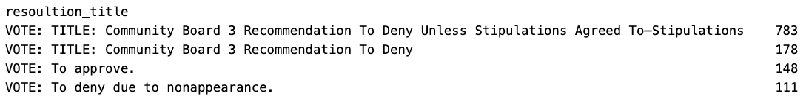
Typically they Deny!
(unless stipulations agreed to)
Above 6500 resolutions that each have their own context and action. Within those are nearly 2M words, which is about 3.3 War and Peace novels. There is so much text, but no way to search across resolutions. There is no way to Ctr-F to find all resolutions. So CB3 tends to approve the denial of resolutions accounting for 39% of all resolutions — which seem to stem from their liquor license docket. The board’s default posture is to deny or set conditions (“Deny Unless Stipulations Agreed To”) rather than give unconditional approval.
When Key Community Decisions Become More Accessible
Analytics Opportunity
Search thousands of resolutions by address, business name, or topic
Track a community board’s position on recurring issues over 20+ years
Compare contested vs. unanimous votes by topic area
Identify patterns on controversial issues
With NLP / Embeddings
Semantic search: ‘Find all resolutions about outdoor dining’
Cluster resolutions by topic or location
Detect shifts in sentiment and language over time
Compare positions across community boards
Civic
Accountability
Flag if city agencies ignore a resolution
Track liquor license denial → approval
Explore how community boards respond to the needs of their district
Knowledge base linking resolutions to the meeting discussion
Taking it Further with AI
· What a database unlocks: Longitudinal analysis: “how has MCB3’s posture on liquor licensing changed?” · Pattern detection: what gets denied vs. approved? · Semantic search by address, business, or policy topic Use case possibilities: Extract locations that are discussed to search by business name, address, agency, permit type
When Key Community Decisions Become More Accessible
Analytics Opportunity
Search thousands of resolutions by address, business name, or topic
Track a community board’s position on recurring issues over 20+ years
Compare contested vs. unanimous votes by topic area
Identify patterns on controversial issues
With NLP / Embeddings
Semantic search: ‘Find all resolutions about outdoor dining’
Cluster resolutions by topic or location
Detect shifts in sentiment and language over time
Compare positions across community boards
Civic
Accountability
Flag if city agencies ignore a resolution
Track liquor license denial → approval
Explore how community boards respond to the needs of their district
Knowledge base linking resolutions to the meeting discussion
Taking it Further with AI
Particularly with term limits, access to institutional knowledge is even more important!
· What a database unlocks: Longitudinal analysis: “how has MCB3’s posture on liquor licensing changed?” · Pattern detection: what gets denied vs. approved? · Semantic search by address, business, or policy topic Use case possibilities: Extract locations that are discussed to search by business name, address, agency, permit type Now we transition into Block Party’s newest feature and what we built:
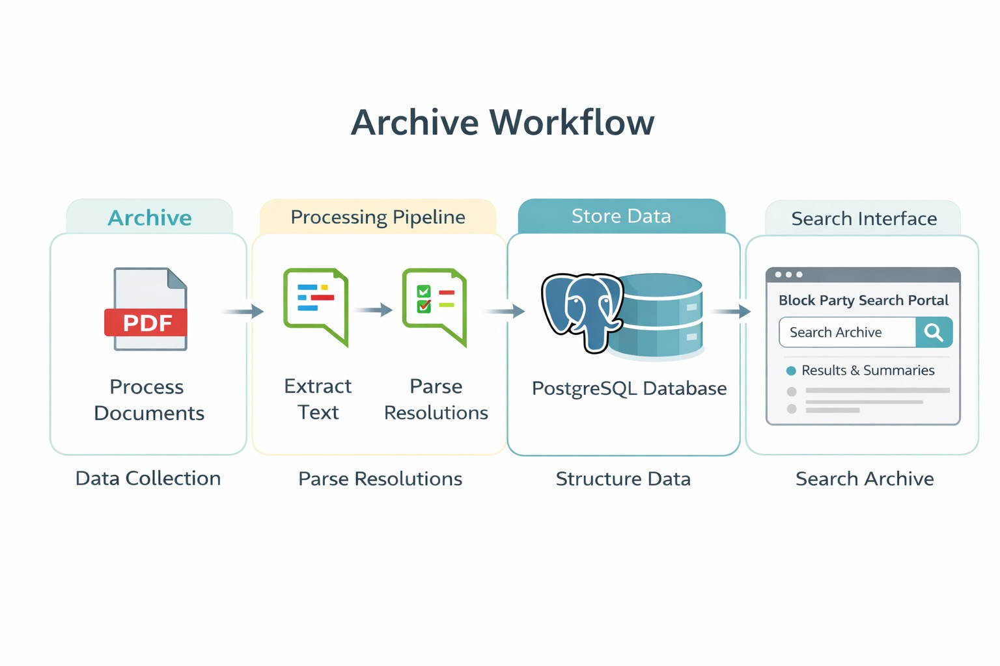
Here is How We Built It
Create Vector Embedding
Generate Summary
First we
The Source Data — Community Board Website PDFs
MCB3 posts meeting minutes and vote records publicly — but in three different URL formats across eras.
2021 – present
manhattancb3/downloads/minutes/YYYY/minutesYYYY-MM.pdf
2004 – 2020
manhattancb3/downloads/minutes/minutesYYYY-MM.pdf
2002 – 2003
manhattancb3/cb3docs/reso-archive/MM-Name-YYYY-Resolutions.pdf
Challenge: each era has different PDF formatting, vote tally conventions, and resolution structure.

It’s exciting to see some community boards have adopted solutions like Airtable!

How the Extractor Works — Three-Step Pipeline
1
Fetch PDF
HTTP request to nyc.gov
Processed in memory—no files saved
→
2
Extract text
pdfplumber reads all pages
Concatenates raw text string
→
3
Parse & store
Regex splits text:
Find resolution chunks (VOTE:)
Split by markers TITLE:
WHEREAS: THEREFORE:
Create Vector Embedding
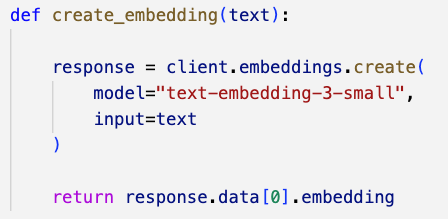
Pause to ask if folks are familiar with vector embeddings

Generate Summary
Group text chunks by each section of the resolution
Send to a prompt
Specify the output structure
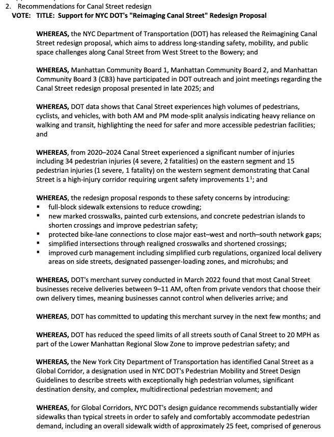
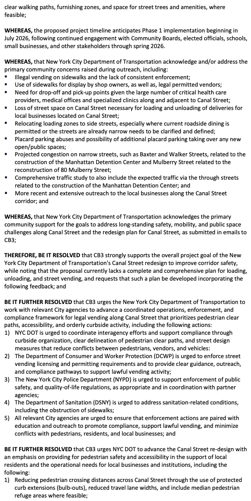
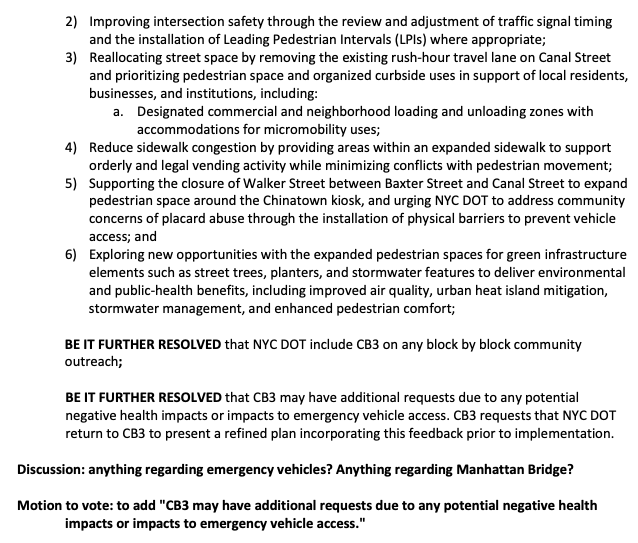
Who wants to read this?
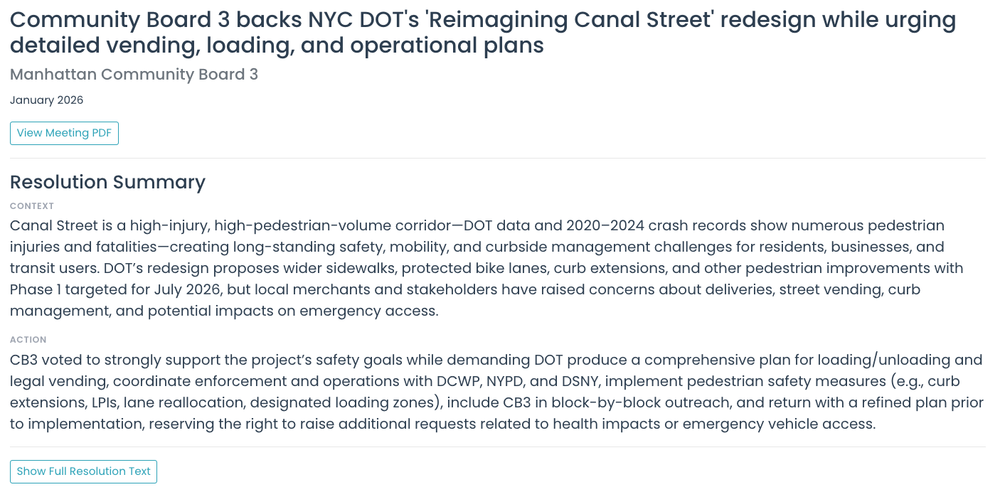
Community concerns
Reliable data points
Locations
Entities
Topics
Next steps
Resolutions as a Data Source
We created a summary from the full resolution text in order to make the information more accessible. Here is what the full resolution looked like
What if we could dive into the meeting discussion?
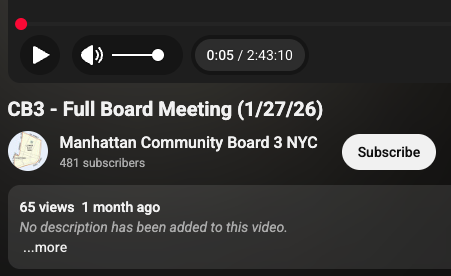
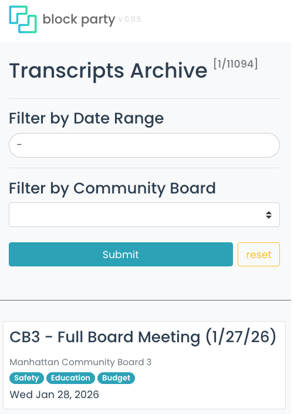
“Our main concern is that, all parking spaces on Canal Street from Broadway to East Elizabeth Street will be removed under the new DOT plan to widen the sidewalks. This will create major problems for truck delivery to local businesses and for seniors and patients with mobility impairments, who rely on ambulance or call service to reach the doctor's offices. Especially, since there are about 200 medical providers and two large radiology center on Canal Street.”
Link to Full Transcript
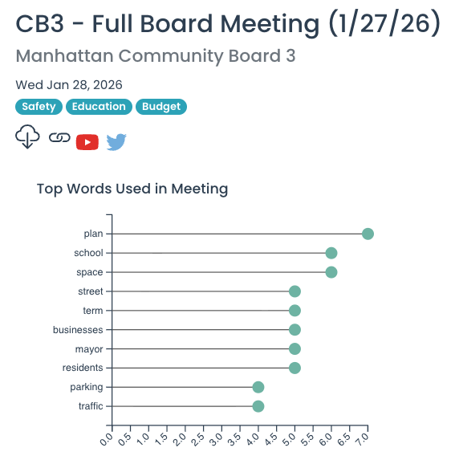
“Our main concern is that, all parking spaces on Canal Street from Broadway to East Elizabeth Street will be removed under the new DOT plan to widen the sidewalks. This will create major problems for truck delivery to local businesses and for seniors and patients with mobility impairments, who rely on ambulance or call service to reach the doctor's offices. Especially, since there are about 200 medical providers and two large radiology center on Canal Street.”
Link to Full Transcript
What if we could search across all 59 community boards?
Join the Party!
blockparty.studio
blockparty.meeting@gmail.com
https://www.linkedin.com/in/sarahjunesachs/
https://www.linkedin.com/in/tal-roded/
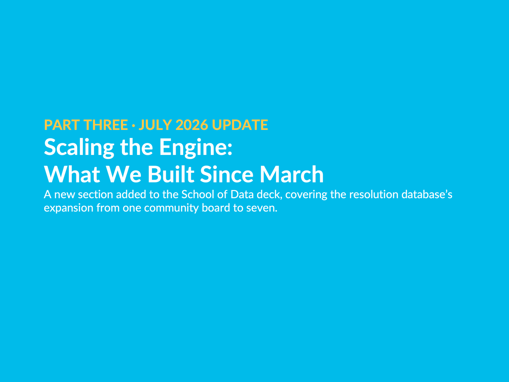
We would love to connect - come join the party and sign-up to stay updated on conversations happening in your community board, or search through our archive mode for stories and insight.
Where We Left Off in March 2026
The state of the project:
· One board: Manhattan CB3
· 6,511 resolutions, 2002–2026
· A chain of procedural Python scripts
· One regex parser, tuned to MCB3’s PDFs
· Runs kicked off by hand
The open question we ended on:
“Extending to all 59 boards: how might we generalize the pipeline? Each board formats their minutes differently.”
Quick recap of the March state: everything you just saw ran on one board, MCB3, with hand-run scripts and a parser that knew exactly one document format. The closing slide of the original talk asked how we would ever generalize it. This new section is a progress report on exactly that question.
Step One: Ship a Real Pipeline, Not More Scripts
The procedural scripts were rewritten as an object-oriented pipeline.
-> Board-specific logic moved out of the code and into per-board config files.
One domain object
A ResolutionDocument flows through every stage: discover → fetch → extract → parse → embed → persist.
Pydantic validators guard each step.
Config-driven boards
Each board is a YAML file: source type, URL patterns, parser options, filters. Adding a board means writing config, not forking code.
All 12 Manhattan boards currently have one.
A real CLI + tests
extract · reextract · audit · report · export-csv · migrate, each a command.
131 tests cover parsers, sources, and pipeline fixes.
The big decision: stop patching scripts and build the pipeline the scaffolding always implied. One domain object with a validated lifecycle, board behavior expressed as YAML config, and a CLI so every operation is repeatable. 131 tests mean a parser change on one board cannot silently break another.
Every Board Publishes Differently, So Discovery Is Pluggable
Six source adapters feed one shared pipeline. The board’s YAML names its adapter; everything downstream is identical.
NYCGovAssetsSource MCB3: bundled meeting-minute PDFs on nyc.gov, four URL eras back to 2002
WordPressIndexSource MCB2, 4, 9, 10: scrapes the boards’ WordPress index pages for document links
GoogleDriveFolderSource MCB7: lists a public Google Drive folder, 380 PDFs back to 2000
WaybackCdxSource MCB8: queries the Internet Archive’s CDX index when a board’s own site can’t be crawled
AirtableSharedViewSource MCB5, 6, 11, 12: harvests public share views through the signed downloadCsv endpoint, no API key needed
AirtableInterfacePageSource MCB1: headless Chromium intercepts the interface page’s own data call; full resolution text arrives in-table
The core insight of the scale-up: boards differ most in where their documents live, not what the documents say. So discovery became a pluggable adapter. Six adapters now cover every hosting pattern we have met across Manhattan: city-hosted PDFs, WordPress sites, a Google Drive folder, the Internet Archive, and two flavors of Airtable: share views harvested without an API key, and an interface page read by a headless browser.
Some of It Was Pure Detective Work
MCB7: the Drive folder in the JS bundle
CB7 rebuilt its site as a React app with no document index. The public Google Drive folder ID was sitting in the compiled JavaScript: 380 dated PDFs back to 2000.
Airtable opened five boards, no API key needed
The public share page carries a server-signed URL; the view’s downloadCsv endpoint then signs every attachment. MCB5, 6, 11, and 12 came in this way; MCB5 went from 40 resolutions to 3,031, a 76× gain.
MCB1: intercepting the page’s own API call
MCB1’s share is an interface page with no CSV export. Headless Chromium captures the page’s own readForSharedPages call and rewrites it from msgpack to JSON: 5,070 documents, zero PDF downloads, about 30 seconds.
One wall is still real
MCB9’s minutes are scanned images with no text layer. It waits on an OCR stage rather than a worse parse; every other Manhattan board is extracted.
Crowd-pleaser slide: the weird finds. A Drive folder ID excavated from a React bundle, Airtable share views harvested through their own signed export endpoint, and a headless browser reading MCB1’s interface page the way the page reads itself. The honest part: MCB9’s scanned PDFs still wait on OCR, the one board left.
Extraction Is Now Hybrid: Regex First, Claude When It Matters
1 · Regex parser
Ported from the original extractor. Handles the standard formats at zero token cost.
2 · Quality gates
Heuristics score every parse; missing clauses, suspicious titles, and empty bodies trigger escalation.
3 · Claude fallback
Documents that fail the gates go to Claude Sonnet for structured extraction instead.
Trust, but verify: every run also re-parses a deterministic 5% sample with both methods and compares them, so format drift on any board surfaces as a diff, not as silent data corruption.
The March pipeline was pure regex, which fails silently when a board changes its format. The rewrite made extraction hybrid: regex handles the standard cases for free, quality heuristics catch the failures, and Claude extracts the hard documents. The 5% dual-parse sample is the insurance policy: drift shows up as a comparison diff before it becomes bad data.
Teaching One Parser Eleven Dialects
Each new board broke assumptions MCB3 never tested.
The fix loop: dump → audit → fix, run five to seven rounds per board group:
Envelope & letterhead stripping CB letters wrap resolutions in addresses, salutations, signature closings, and page footers; letterhead leaking into text fell 83% → 1% on MCB2
Bundle splitting One PDF often holds many resolutions; numbered-item and tally-terminated splitting recovered them as separate records
Prose vote tallies “12 in favor, 2 opposed” written as sentences now parses into structured counts
Noise-title filters Rows titled with bare dates, vote tallies, or website page chrome are dropped board-wide; zero-clause rows on MCB2 fell 76% → 8%
True meeting counts Meetings now key on board + date, so one-PDF-per-resolution boards stopped reporting one “meeting” per document
Every change lands in a per-board scorecard, so drift is a ledger entry; residual pollution on the Airtable boards is at or under one row per board.
This is where most of the real hours went. MCB3 trained us on one dialect of the resolution format; the other boards each speak their own. The loop that worked: dump the board, audit the output, fix the parser, five to seven rounds per board group. The metrics here are from that ledger: letterhead contamination down from 83% of rows to 1%, empty-body rows from 76% to 8%, and residual pollution at or under one row per board on the Airtable boards.
Every Resolution Now Carries More
The March schema stored a title, clauses, and a vote. New extractions add:
Verbatim text + provenance
The exact source text of every clause, plus which document and parser version produced each record.
Three-field summaries
Claude Haiku writes a structured title / context / action summary per resolution (the exact shape blockparty.studio renders).
Bigger embeddings
Chunk vectors upgraded to text-embedding-3-large (3,072 dimensions) for sharper semantic search across boards.
Structured votes
Yes / no / abstain / present-not-voting counts and outcome, parsed even from prose tallies in letter formats.
Summaries + provenance mean a reader can trust the gist and still check the source.
The record itself got richer. Where March gave us a title, clauses, and a vote, each resolution now keeps its verbatim source text with provenance, a structured three-field summary written by Claude Haiku in exactly the shape the Block Party site displays, full vote breakdowns, and 3,072-dimension embeddings for semantic search.
The Plumbing Became Real Infrastructure
Storage
· Supabase Postgres + pgvector is the source of truth
· Three tables: meetings, resolutions, text chunks
· Schema changes ship as numbered migrations
· Re-runs preserve existing record UUIDs, so links never break
Automation
· Per-board backfills in GitHub Actions: idempotent upserts, weekly cron for deltas
· Dry-run mode for safe rehearsal
· Content-addressed PDF cache makes re-extraction cheap
· Audit + report commands catch regressions between runs
Battle scars included: the cron shook out real-world bugs: nyc.gov blocking bot user-agents, token-limit truncation on 19-resolution meetings, streaming requirements on long extractions. Each fix is now a regression test.
None of this is glamorous, and all of it is the difference between a demo and a system. Supabase with pgvector is the single source of truth, schema changes are migrations, UUIDs survive re-runs so nothing downstream breaks, and GitHub Actions runs each board’s backfill with idempotent upserts while a weekly cron picks up deltas. The bugs the cron surfaced are all regression tests now.
The Corpus Today
11
boards extracted
32,092
resolutions
3,164
board meetings
153,535
text chunks
MCB3 6,347 resolutions · 2004–2026 · nyc.gov minutes, the reference board
MCB1 5,634 resolutions · 2003–2026 · Airtable interface page, full text in-table
MCB4 4,790 resolutions · 1997–2026 · board letter archives, the deepest history in the corpus
MCB2 3,937 resolutions · 2013–2026 · one PDF per resolution
MCB7 3,860 resolutions · 2000–2026 · Google Drive archive
MCB5 3,031 resolutions · 2005–2026 · Airtable share view, 76× what Wayback reached
MCB8 1,527 resolutions · 2010–2026 · via Internet Archive
MCB6 · 12 · 11 · 10 1,236 · 994 · 578 · 158 resolutions · Airtable and WordPress boards
March: one board, 6,511 resolutions. July: eleven boards, 32,092, a 4.9× corpus in four months.
The headline numbers as of July 15: eleven boards, 32,092 resolutions, 3,164 meetings, 153,535 embeddable text chunks. The Airtable harvest added five boards, including MCB1’s 5,634 resolutions with zero PDF downloads, and MCB4’s letter archive still reaches back to 1997. The corpus is 4.9× the March count, and every number on this slide comes from the per-board scorecard, not from memory.
Manhattan, Board by Board: the Honest Status
✅ Extracted (11)
Every board except MCB9: parsed, filtered, scorecarded, and browsable. 32,092 resolutions across 3,164 meetings, with records back to 1997.
🔓 Unlocked (5)
No board needed an API token after all: MCB5, 6, 11, and 12 export through the share view’s signed downloadCsv endpoint, and MCB1 yields to a headless browser. All five are extracted.
📄 Needs OCR (1)
MCB9 posts minutes as scanned images: 82 of 83 PDFs have no text layer. It waits on an OCR stage rather than a worse parse.
🚀 In production (2 of 11)
All 11 boards backfill into Supabase with embeddings and Haiku summaries. MCB10 is verified end-to-end: 1,516 chunks, 100% embedded. MCB11 is done; the rest are queued.
No backfilled numbers, no false precision: a blank cell beats a made-up one.
The full honest picture. Eleven boards extracted and browsable; the Airtable harvest cleared every gated board without an API token. MCB9 still needs OCR before it gets a fair parse. The production backfill is running: MCB10 verified end-to-end, MCB11 done, the rest queued. The project rule stands: no backfilled numbers, a blank beats a guess.
What Made It Hard (and What We Learned)
The web decays. Four URL eras on one board, a site rebuilt into a React app, Cloudflare walls, dead domains. Public records rot in place.
Green doesn’t mean done. On the first wet run, every chunk insert failed on a legacy NOT NULL column while the workflow reported success; embeddings were paid for and discarded. Verification now counts actual rows.
A trimmer ate the long letters. MCB12’s letters repeat the addressee at every page break; the trimmer read it as a new letter and cut every multi-page resolution to one page. The tell: bodies ending mid-clause.
A heuristic ate real titles. The chair-signature pattern matched every address-led Midtown title and blanked 297 MCB5 titles. Human-curated Airtable titles are never overridden now.
Regex fails silently on OCR text. A word-boundary anchor finds nothing in space-squished text like “InFavor0Opposed”; no boundary exists between word characters. Every pattern change is re-measured against the corpus.
If you take one meta-lesson from this section: the failure mode of civic data pipelines is silence. A green run that discarded every embedding, a trimmer that halved documents, a heuristic that blanked 297 real titles, a regex that matched nothing: none of them threw an error. What works is verification that counts actual rows and an audit loop that re-measures every change against the corpus.
What’s Next
1 Finish the production backfill: all 11 boards write embeddings and summaries; MCB10 and MCB11 are in, the rest are queued
2 Close the last gap: OCR for MCB9’s scanned minutes, the only Manhattan board not yet extracted
3 Semantic search across boards on blockparty.studio: one question, every board’s answer, twenty years deep
4 Then past Manhattan: the adapters were built for 59 boards, not 12
The March deck asked whether the pipeline could generalize. It can. Now the work is turning coverage into a product people reach for.
The near-term list is concrete: finish the per-board backfill that is already running, OCR MCB9, and ship cross-board semantic search on the live site. The adapter architecture was always aimed at 59 boards; Manhattan was the proving ground.
Join the Party! There are More Questions to Explore
16 / 16
?
A Tool for Civic Inquiry
What happens next. Did the agency comply? Did the developer get approved?
?
Extend to all 59 Community Boards
How might we generalize the pipeline? Each board formats their minutes differently.
?
Connect to the Committee Layer
Real deliberation happens in committees — can we connect conversation context to resolutions?
?
More Accessible
How might we improve how the key information can be extracted, summarized, digested?
Read more @ NYCuriosity. Join @ Committee Meeting. Subscribe @ Block Party.
Please share your thoughts/feedback/ideas with us!
Please look through it and give us ideas, and Sign up for email - subscribe Read Tal’s substack! He writes about newsletters about Community Boards Go to a committee meeting!